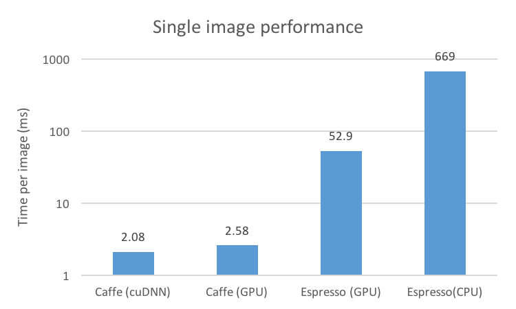
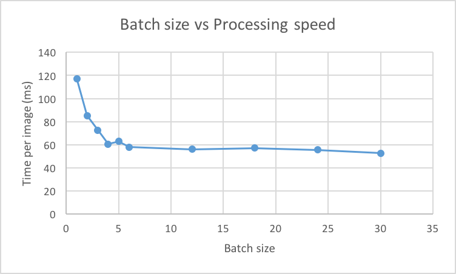
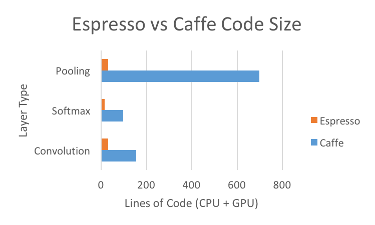

Espresso is a partial implementation of Caffe in the Halide image processing language. It supports fine-tuning of deep neural networks to achieve high evaluation performance on multiple platforms.
Caffe is a deep learning framework developed by the Berkeley Vision and Learning Center. It features GPU evaluation and training of convolutional neural networks with a clean interface. Models are described by configuration files and trained models can be exported.
Halide is an domain-specific language embedded in C++. It decouples algorithm implementations from scheduling and organization of computation, making it easier to optimize image processing pipelines for performance on multiple platforms.
Espresso is a deep learning framework implemented with the Halide language and philosophy in mind. We produce highly maintainable yet performant parallel code that is competitive with Caffe and works as a drop-in replacement for Caffe.
Speeding up and debittering Caffe by adding Halide
Espresso is a partial implementation of Caffe in the Halide image processing language. It supports fine-tuning of deep neural networks to achieve high evaluation performance on multiple platforms.
Caffe is a deep learning framework developed by the Berkeley Vision and Learning Center. It features GPU evaluation and training of convolutional neural networks with a clean interface. Models are described by configuration files and trained models can be exported.
Halide is an domain-specific language embedded in C++. It decouples algorithm implementations from scheduling and organization of computation, making it easier to optimize image processing pipelines for performance on multiple platforms.
CaffeNet is a 9-layer DNN trained on ILSVRC 2012. It takes 256x256x3 images as input, and outputs a 1000-wide probability vector, where every item in the vector corresponds with a class. The first five layers are convolutional, and the next three are fully-connected. The last fully-connected layer is connected with a softmax which produces the distribution over the 1000 class labels.
DNNs in Espresso are expressed as compositions of Layers. Every Layer takes a Layer as input, besides the MemoryData Layer, which is used for input. We implemented most of the layers found in Caffe. Input is represented as a four-dimensional matrix (x, y, z, n), where (x, y) is a single image, z represents the channels in a single image, and n is the image index. For our CaffeNet demo, we take all images in the PPM format from an input directory. By expressing input in this way, we can run multiple images through CaffeNet simultaneously, ensuring that we maximize the amount of work done on the GPU before copying data back out to the CPU. DNNs can be loaded from a .caffemodel file, or built from hand in C++. Each individual layer, as a Halide construct, consists of an algorithm and a schedule. Specifically, every Layer has a Halide::Func forward, which represents the output of the layer. (Currently, Espresso does not support back propogation for training). These functions are defined in the same four dimensions as the input, though they are not constrained in what the dimension sizes actually are.
Scheduling in Halide defines order and locality, and allows us to exploit CPU or GPU parallelism. In Espresso, we aggressively schedule layers to achieve maximum performance. We focused on GPU performance, so our scheduling is done solely through Halide's GPU scheduling primitives. There are a few patterns in scheduling that we found to be very effective. First, tiling pieces of layers and assigning them to thread blocks dramatically sped up computation in most cases, as we were able to exploit both locality and warps not diverging. This pattern works best when the layer requires surrounding pixels to compute, such as in a convolution. Another effective pattern was a call to vectorize(), which is essentially a one-dimensional tile. This pattern works best on layers with only horizontal memory accesses, like our InnerProduct layer. We have provided helper functions for both of these patterns.
Halide aggressively inlines functions in multi-stage pipelines. What this means for Espresso is that if a function is not explicitly scheduled, it will most likely be inlined into the next explictly scheduled step in the Espresso pipeline. This can improve performance and memory usage, since we do not have to store an intermediate image for the inlined function.
Var i, j, k, l; RDom r(0, kernel_size, 0, kernel_size); // pad boundaries with 0s Func clamped = BoundaryConditions::constant_exterior( input, 0.0f, 0, input.x, 0, input.y); Func output(i, j) = sum(clamped(i - r.x, j - r.y) * kernel(r.x, r.y));
This snippet of Halide code cleanly describes a simplified convolutional layer with an input image and a kernel. Notice that it follows the mathematical definition of the convolution very closely: \[ (I * K)[i, j] = \sum_m \sum_n I[i-m, j-n]K[m, n] \]
Var i_inner, i_outer, j_inner, j_outer, tile_index; output.tile(i, j, i_outer, j_outer, i_inner, j_inner, 4, 4) .unroll(i_inner).unroll(j_inner) .fuse(i_outer, j_outer, tile_index) .parallel(tile_index) .compute_root();
This snippet of Halide code describes the allocation of computational resources of the algorithm. Modifying the scheduling to target different architectures will not affect the correctness of the code. Notice that this code splits the output into $4 \times 4$ tiles, unrolls an inner loop computing those tiles, and creates an outer loop indexed by tile_index, which runs in parallel and stores computations to memory.
We tested our implementation of CaffeNet in Espresso using an nVIDIA GTX 770 GPU with 2GB of RAM. Our reference benchmark for both performance and correctness was the same network run in Caffe. We tested on various 256x256x3 images, with a batch size of 30 images on Espresso and 10 images on Caffe. The batch size is larger with Espresso because of Halide's inlining - we manage to save some memory by not storing intermediate layers. We also tested Espresso on a CPU (a Core i7 4770k), but weren't able to test Caffe on a CPU due to compilation issues.
We achieved speeds of about 52ms/image when using a batch size of 30, which remains uncompetitive with Caffe. This is partially due to the fact that Caffe uses cuDNN, a library specifically optimized for neural networks that Halide does not use when compiling (and will not in the forseeable future). We believe that much of the remainder can be made up by further optimizing our layer implementations.
The majority of the computation time was spent in the convolutional layers. Caffe uses a highly tuned matrix multiplication to perform convolution, while our implmentation does the convolution directly. We believe that if we implement convolution through FFTs and matrix multiplication, we could see additional speedup. Unfortunately, we were unable to complete this implementation given the time constraints.
We also tested Espresso on different batch sizes. We found that the more images we ran per batch, the faster the run was per batch. This is because there is overhead in copying the image data from the CPU to the GPU - we noticed little speedup when we increased the batch size when running on the CPU only.
We were able to achieve these results with much less time spent optimizing the code than we would have done using Caffe. While not a perfect metric, we can use code size as an estimate for complexity. As shown by the figure, Espressso can define and schedule layers much more concisely than Caffe. Also, we were able to achieve the above performance results with only two contributors over the span of less than a week -- Caffe has been optimized by a hundred contributors over a much longer period.
If we had more time, we would have attempted to implement training in Halide. This is a more difficult task than testing, because there is backpropagation: the results of every intermediate layer now must be stored and used on the layer above it. This would likely entail splitting the pipeline code into multiple calls to realize(), which would cause some performance loss from the lack of function inlining. However, we would not have to move the buffer back on to the CPU, becuase Halide provides a Buffer type which can exist on the GPU.
We would also focus on bringing performance up to the point where images could be run through the network in less than 10ms. We firmly believe that it is possible with more intelligent scheduling and with more efficient algorithms for some of the layers. Because Halide scheduling can be compiled just-in-time, this means that the implementation of each layer has control over when they are inlined into another layer or not. This is a potential area for speedup that cannot be realized in a framework like Caffe, where each layer is a precompiled function. Currently, we take the most composable approach where each layer decides whether to store intermediate results based on its own operations, but more work can be put into determining how to schedule over groups of layers in order to squeeze out more performance.
Jonathan Ragan-Kelley, Connelly Barnes, Andrew Adams, Sylvain Paris, Frdo Durand, and Saman Amarasinghe. 2013. Halide: a language and compiler for optimizing parallelism, locality, and recomputation in image processing pipelines. In Proceedings of the 34th ACM SIGPLAN conference on Programming language design and implementation (PLDI ’13). ACM, New York, NY, USA, 519-530. DOI=10.1145/2491956.2462176 http://doi.acm.org/10.1145/2491956.2462176
Jia, Yangqing and Shelhamer, Evan and Donahue, Jeff and Karayev, Sergey and Long, Jonathan and Girshick, Ross and Guadarrama, Sergio and Darrell, Trevor. Caffe: Convolutional Architecture for Fast Feature Embedding. 2014. arXiv:1408.5093
Work was divided evenly.